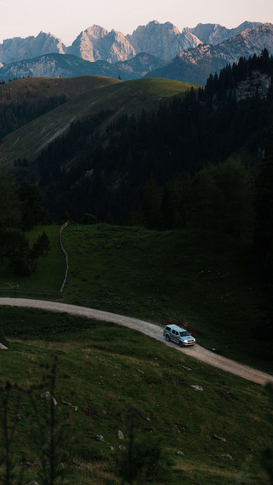

How to Get to La Fortuna: The Ultimate 2026 Transportation Guide
By Local Expert | Updated July 2026

Getting to La Fortuna is part of the adventure. Located in the Northern Highlands of Costa Rica, it is roughly 3 to 4 hours away from the two main international airports: San José (SJO) and Liberia (LIR).
Rental Car
Best for freedom. $50-$90 per day. 3.5 hours drive.
Shared Shuttle
Best for solo travelers. $60 per person. Relaxing.
Public Bus
Best for budget. $5 per person. 5 hours drive.
1. By Rental Car (The Best Way)
Renting a car is the most popular way to reach Arenal. The roads are paved and in good condition, although they are very curvy and mountainous.
- Route: From San Jose, take Route 1 to San Ramon and then follow the signs to La Fortuna.
- Navigation: Always use Waze or Google Maps. Don't rely on physical maps.
- Tip: Avoid driving at night. Fog and heavy rain are common in the mountains after 6:00 PM.
AdSense In-Article Ad (Rental Cars)
2. Shared or Private Shuttles
If you don't want to drive, shuttles like Interbus or Tropical激 Shuttles offer door-to-door service from your hotel in San Jose to La Fortuna.
Private shuttles are great for families (around $200 for the whole van), while shared shuttles are perfect for couples or solo travelers ($50-$65 per person).
3. Public Bus (The Budget Option)
Note: Only for patient travelers!
From San Jose, go to the Terminal 7-10. There is a direct bus that leaves early in the morning (around 8:40 AM). If you miss it, you have to take a bus to Ciudad Quesada and then another one to La Fortuna. Total cost: Less than $10 USD.
Frequently Asked Questions
Do I need a 4x4 to drive to La Fortuna?
No, a sedan is fine as roads are paved. However, an SUV is more comfortable for the potholes and mountain hills.
Is there an airport in La Fortuna?
Yes, the Arenal Airport (FON), but it only receives small domestic flights (Sansa). It is fast but expensive.
Once you arrive...
You'll need a place to relax. Check out our guide to the best thermal waters.
See Hot Springs Guide